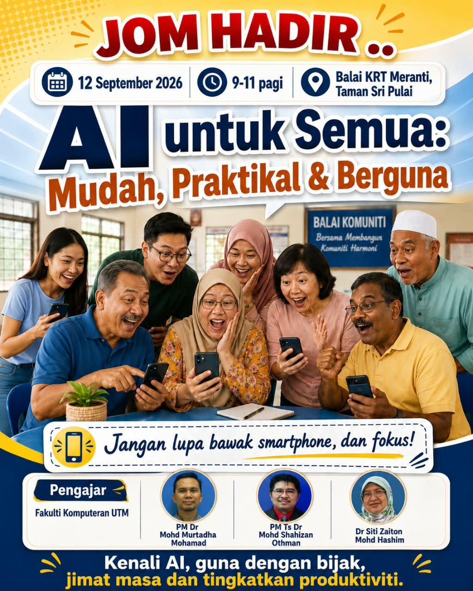

Tarikh12 September 2026
✦ Kursus komuniti percuma
AI untuk Semua:
Mudah, Praktikal & Berguna
Kenali AI dalam suasana santai dan mesra. Belajar cara menggunakan teknologi ini dengan bijak untuk menjimatkan masa dan meningkatkan produktiviti harian.
📱 Jangan lupa bawa telefon pintar dan fokus!

Masa9.00 – 11.00 pagi
LokasiBalai KRT Meranti,
Taman Sri Pulai
Taman Sri Pulai
Belajar tanpa tekanan
Dua jam yang membuka peluang baharu
Direka untuk orang awam, termasuk mereka yang baru pertama kali menggunakan AI.
Mesra semua peringkat
Penerangan mudah difahami, tanpa istilah teknikal yang rumit.
Jimat masa
Temui cara AI membantu tugasan harian dilakukan dengan lebih pantas.
Terus cuba sendiri
Aktiviti praktikal menggunakan telefon pintar yang anda bawa.
Guna dengan bijak
Fahami asas penggunaan AI yang bertanggungjawab dan selamat.
Dibimbing oleh tenaga akademik
Kenali pengajar anda
Tenaga pengajar daripada Fakulti Komputeran, Universiti Teknologi Malaysia.
Pengajar
PM Dr Mohd Murtadha Mohamad
Fakulti Komputeran UTM
Pengajar
PM Ts Dr Mohd Shahizan Othman
Fakulti Komputeran UTM
Pengajar
Dr Siti Zaiton Mohd Hashim
Fakulti Komputeran UTM
Jom hadir
Kenali AI. Guna dengan bijak.
Hadir bersama telefon pintar anda dan bersedia untuk mencuba sesuatu yang baharu.
2026